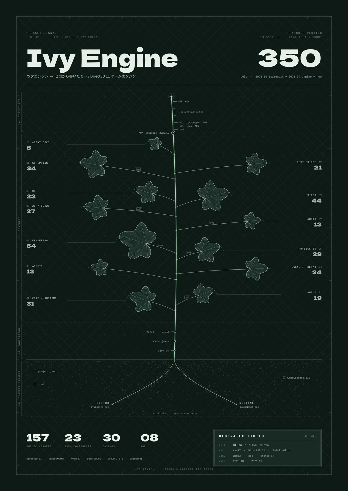
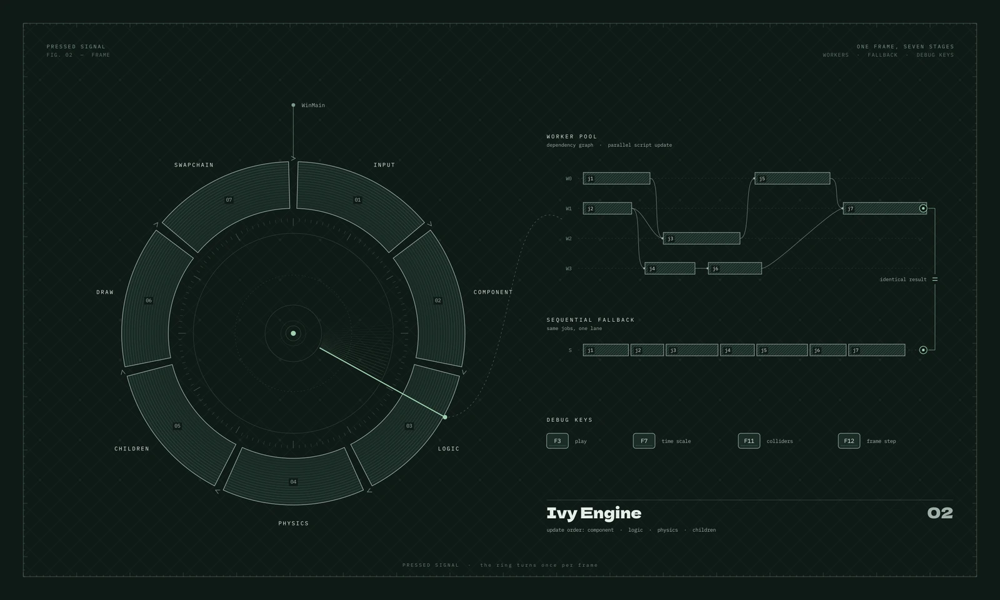
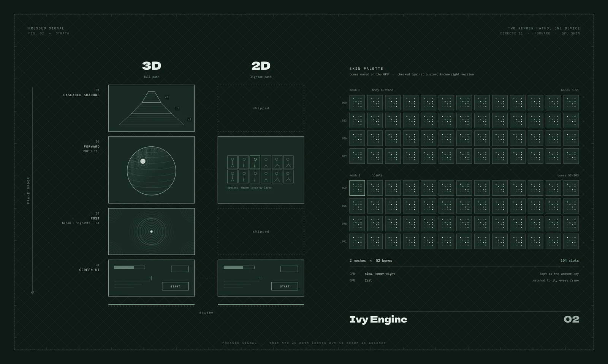
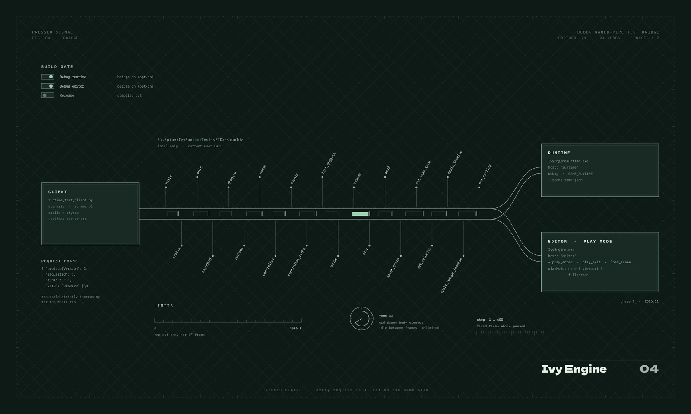
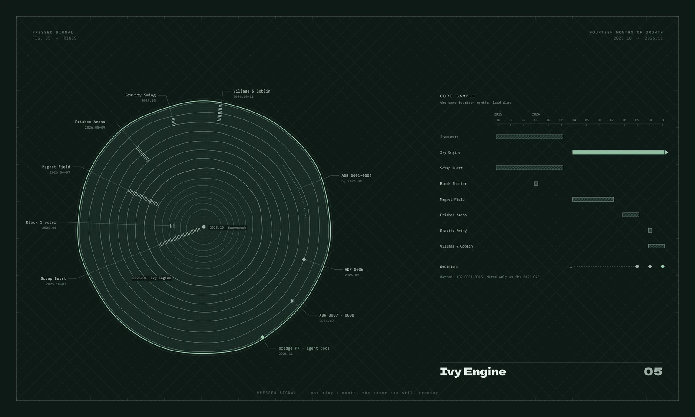

012025/10 →Personal · Solo · C++17 / D3D11
Ivy Engine
ツタエンジン
一人でゼロから書いた C++／Direct3D 11 ゲームエンジン。ImGui エディタと、同じシーンを動かす 3D／2D ランタイム。ゲームを作りながら、蔦のように育てている。

- 350機能
- 13システム
- 23JSON コンポーネント
- v48スクリプト ABI
- 24テストブリッジの命令
- 08設計判断の記録
- L4スクリプト ABIScriptRuntimeApi v48。C++ DLL をホットリロード。追記のみで、古いコンテンツも動く。
- L3機能13 系統・350 項目。図版では葉の面積が項目数。
- L2基盤Win32／D3D11、コンポーネントのシーングラフ、シーン JSON v4。
- L1ホストエディタとランタイム。二つの根が一本の茎になる。
- L0コンテンツproject.json・rom/・GameScripts.dll。エンジンとゲームを分ける。
01
構成Two hosts, one scene loop
Fig. 01b
横に送れます。
横に送れます。
01
エンジンとゲームを分ける
コンテンツプロジェクトはただのフォルダ。配布物にエンジンの名前は出ない。
02
Play と配布で同じ動き
Play モード（F3）は、配布版と同じコンポーネントで動く。
03
設定は配布先まで届く
音量バスと重力をランタイムでも project.json から読む。JSON は 20、物理は 9.81 というずれを直した。
02
フレームOne frame, seven stages
Fig. 02

01
決まった更新順
コンポーネント、ロジック、物理、子の順。毎フレーム同じ。
02
自作のジョブシステム
ワーカープールが依存グラフを実行する。スクリプト更新も並列。
03
逐次でも同じ結果
逐次フォールバックは並列と同じ挙動。並列のバグかどうかを切り分けられる。
04
止めて、一コマずつ
F7 で時間スケール、F12 でフレームステップ、F11 でコライダー表示。
03
描画Two paths, one device
Fig. 03

01
2D は引き算で作る
2D シーンはスプライトを直接描き、影・スカイ・ポストを飛ばす。3D 用の資源は切り替え時に解放。
02
フォワード PBR
Cook-Torrance、IBL、カスケードシャドウ、ブルーム・ビネット・色収差。
03
カリング
3D の視錐台、影のカスケード、2D スプライトの三つ。距離とオクルージョンは未実装。
- 毎フレームの CPU スキンでは、Mixamo 級の 32 体を 3060 級で 60 fps に保てない。
- 前回の「修正」では体のパーツが散らばった。原因はメッシュ密度ではなくバインド（bindOffset の順序、toLocal の欠落、余分な転置）。
- 単一メッシュだけの GPU 経路では、Frisbee Arena の 2v2 が 20 fps を切った。
- GPU のパレットは SkinFromScratch と同じ式にする。CPU 版は位置が一致するまでオラクルとして残す。
- パレットはメッシュ数 × ボーン数（2 × 52 = 104）。頂点のボーン番号を meshIndex × boneCount だけずらす。
- 速い実装を直す前に、遅くても正しい実装を手元に置く。
04
機能Feature atlas
Fig. 04
350項目・13 系統。行を選ぶと中身が出る。
一部のみ実装
レンダリング64
- PBR
- IBL
- カスケードシャドウ
- GPU スキン
- ポストプロセス
- Effekseer
- ブルーム
- エネルギー保存
- スキンメッシュ
- トゥーン
- トゥーンアウトライン
- 色収差
- ビネット
- RGB バースト
- スカイボックス
- ハイトフォグ
- 法線マップ
- エミッション
- CPU パーティクル
- パーティクル制御
- 指向性ライト
- ポイントライト
- スポットライト
- ライト別ピクセル
- カスケードカリング一部
- 視錐台カリング一部
- シャドウ品質
- シャドウ投影
- FBX／OBJ
- クリップ再生
- ボーンワールド取得
- マテリアル
- ランプテクスチャ
- D3D11 フォワード
- サーフェス FX
- リムライト
- 半球ライティング
- 標準ライティング
- アンリット
- 共有 BRDF LUT
- パノラマ PNG
- モデルキャッシュ
- ビルボード
- 地面揃えビルボード
- デバッグ形状
- デバッグ線／球
- エフェクト部品
- ラインスプライト
- モザイク
- エディタグリッド
- プロキシモデル
- オブジェクト上書き
- 既定シェーダ
- クリア色
- スカイ色調
- アンビエント
- ライト上限
- IBL 不一致表示
- パノラマ失敗表示
- シェーダ数の不一致一部
- CPU スキン予備
- デバイス公開
- ビューポート矩形
- ウィンドウ／全画面
エディタ44
- インスペクタ一部
- Undo／Redo
- トランスフォームギズモ
- プレハブドロップ
- 階層パネル
- 再生ツールバー
- プレハブパネル
- アセットブラウザ
- デバッグカメラ
- ドラッグ＆ドロップ
- ビューポート再生
- 全画面再生
- 変形の Undo
- 部品編集の Undo
- 生成と削除
- 親子変更
- UI の Undo
- ライトギズモ
- カメラギズモ
- UI ギズモ
- 選択ワイヤー
- コンポーネント追加
- 参照検索
- シーン保存
- ダーティ警告
- コンテンツランプ
- 状態ランプ
- UI 編集モード
- 固定アスペクト
- プロジェクト設定
- ファイルメニュー
- テストベッドを開く
- 改名とタグ
- タグ編集
- 右クリックメニュー
- 資産操作
- 検索と更新
- グリッドとリスト
- プロジェクト保存
- ImGui エディタ
- 表示切替
- スタート画面
- UI ズーム
- エクスプローラ表示
スクリプト34
- ホットリロード
- C++ スクリプト
- ホスト ABI
- 並列安全フラグ
- 編集可能フィールド
- スクリプト監視
- DLL 境界
- 直列化
- 三人称カメラ
- 一人称カメラ
- コントローラ
- マグネット
- カメラ外傷
- カメラブレンド
- 導入カメラ
- シーンカメラ API
- 振動
- スティックとトリガ
- キーボード
- マウス
- 再生制御
- テクスチャ API
- UI スクリプト
- クリック
- インスタンス上書き
- クラス名参照
- 登録マクロ
- DLL と静的
- ホスト関数表
- キー詳細
- マウス移動量
- 生成
- 更新
- 破棄
コア／実行31
- ジョブシステム
- 依存グラフ
- 並列スクリプト更新
- コンポーネントシーングラフ
- 停止で編集へ復帰
- 時間スケール
- フレームステップ
- シーンマネージャ
- プレイモード
- ワーカープール
- 逐次フォールバック
- ジョブデバッグ窓
- イージング
- オブジェクト階層
- コンポーネント工場
- コンポーネント寿命
- 更新順
- シーン遷移
- ゲームループ
- フェード
- 終了要求
- ローカル姿勢
- タグ台帳
- 組み込みタグ
- カスタムタグ
- タグ削除の付け替え
- 二重トランスフォーム
- アクティブ切替
- システムタイマー
- スレッド親和性
- Win32 ウィンドウ
物理 3D29
- カスタム剛体
- 反発と摩擦
- トルク
- メッシュコライダー
- レイキャスト
- トリガー
- 角度積分
- スイープ解決
- コライダー生成 API
- 力モード
- 箱コライダー
- 球コライダー
- カプセル
- 円柱コライダー
- 進入と退出
- 衝突コールバック
- 接触可視化
- 物理統計
- 円柱ペア
- 球と円柱
- カプセルと円柱
- 形状別コンポーネント
- タグ無視
- 個体無視
- 運動学フラグ
- 質量と抗力
- 重力
- 汎用コライダー
- レイの種類は文書が一致しない一部
2D27
- Box2D
- 2D 剛体
- 直交カメラ
- ワールドスプライト
- スプライトアニメ
- 2D ギズモ
- 2D レイ
- 2D トリガー
- 60Hz 積分
- 描画順
- シート取り込み
- 2D 編集視点
- 投影の即時切替
- 俯瞰サンプル
- 2D イベント
- 2D デバッグ表示
- 速度と移動
- 箱と円
- 画像ドロップ
- 2D 新規プロジェクト
- 再生 API
- スプライトカリング一部
- 親子とピボット
- ソース矩形
- 色と反転
- 2D 描画経路
- 3D 作業の省略
シーンとプレハブ24
- 実行時生成
- シーン JSON v4
- コンテンツ監視
- テクスチャ差替
- プレハブ包み
- 競合ダイアログ
- 再生の再開
- 失敗時は現状維持
- シーンファイル監視一部
- ノード木
- 登録コンポーネント
- 破棄前コールバック
- 生成ルート
- 3D／2D 経路
- 物理モード
- 旧プレハブ
- プロジェクト JSON
- 既定シーン
- 最近のプロジェクト
- キャンバス埋め込み
- 設定ブロック
- 小数 3 桁
- 旧コライダー読込
- ランタイムは非監視
UI23
- 九アンカー
- ピボット
- 放射状フィル
- ボタン選択
- 三態テクスチャ
- フォントアトラス
- スクリーンキャンバス
- バー
- 重なり順
- カウントダウン
- デザイン解像度
- クリック音
- 要素の追加削除
- テキスト更新
- ボタン
- テキスト
- スプライト
- シーン読込ボタン
- 終了ボタン
- 赤オーバーレイ
- 旧データ互換
- 表示切替
- ドラッグ未確認一部
テスト21
- 名前付きパイプ
- 入力注入
- 一時停止
- PNG キャプチャ
- 性能統計
- 角度の受入試験
- カリング統計
- シナリオ JSON
- Python クライアント
- 観察と一覧
- シーン操作
- 再生の出入り
- エディタでシーン読込
- 14 ボタン
- プロトコル v1
- ランタイムとエディタ
- Linux 単体試験
- 設定の白名簿
- ライブパイプ未完一部
- Release では無効
- オプトイン
ビルド19
- ワンクリックパッケージ
- 静的 CRT
- 再頒布なし
- エディタターゲット
- ランタイムターゲット
- ツールセット v145一部
- C++17
- 全体最適化
- ゲーム名の exe
- FBX DLL
- テストベッド
- 文書は VS2022一部
- 外部テンプレート
- スクリプトは別
- x64
- ブランドの上書き
- deploy.bat
- Win32 と D3D11
- Windows 専用
オーディオ13
- 三次元音
- XAudio2
- バス
- リスナー同期
- 三次元 SE
- 距離スケール
- リスナー
- 音コンポーネント
- 命令再生
- ループと自動再生
- マスター音量
- バス音量
- デバッグ表示
アセット13
- 内容の再読込
- スクリプト再読込
- 時間分割プリロード
- 起動ローディング
- シェーダコンパイル
- パノラマキャッシュ
- 500ms 安定
- 再読込ログ
- rom 優先
- 書き込みはプロジェクト
- エディタの重ね表示
- エンジン既定
- ジャンクションなし
エージェント8
- ドリフト検査
- 文書の書き出し
- API 印
- API 目録の再生成
- エージェント文書
- コミット印
- モジュール印
- 管理セクション
05
エディタLive sketch
Fig. 05
- Rotation
- 0.0, 0.0, 0.0
- Roughness
- 0.34
- Metallic
- 0.28
ここに入れる写真2D ビュー。スプライトと Box2D 表示（F11）。
ここに入れる写真Play モード（F3）。配布と同じ動作。
ここに入れる写真ランタイム起動画面（ロゴと読み込み）。
01
Undo／Redo
コマンドパターンで最大 100 段。ギズモ・インスペクタ・UI 編集までつながる。
02
コンテンツのホットリロード
rom/ の変更をエディタが拾って読み直す。消したファイルが使用中なら赤ランプ。
03
2D ビュー
正射の XY 編集、矩形ピック、XY 限定ギズモ、PNG のドラッグでスプライト作成。
04
ワンクリックのビルド
ランタイムとスクリプトを MSBuild し、ゲーム名の exe にまとめる。
06
検証Runtime test bridge
Fig. 04

01
Debug だけに存在
Release ではコンパイルごと消える。消えていることもツールで確かめる。
02
24 の命令
入力の注入、観測、一時停止とステップ、性能統計、物体の移動。エディタは Play の出入りとシーン読み込みも。
03
シナリオで回す
JSON スキーマ v1 のシナリオを流して、結果を検証する。プロトコルの検査は Linux でも走る。
04
エージェント用の資料
ゲーム側の AI 向けに短い英語資料を書き出す。api: と mod: の印は、ヘッダと照合してずれを検出する。
07
判断Architecture decision records
Fig. 05

0001採用
ランタイムが音量バスを project.json から読む
Project Settings で決めたミックスが、そのままプレイヤーに届く。
0002採用
GUI のビルドで遊べるパッケージを作る
ホストとスクリプトを両方ビルドし、exe をゲーム名に改名して必要物をまとめる。
0003採用
GPU 頂点シェーダスキン
SkinFromScratch と同じ式。CPU 版はオラクルとして残す。
0004採用
ランタイムが重力を project.json から読む
JSON は 20、物理は 9.81 で出荷したずれをなくす。
0005置き換え済み
v1.0 ロック
swing-demo のためにエンジンを凍結。ABI は v41。
0006採用
一人称カメラのための部分解凍
三人称をいじらず、並列のスタックを足す。ABI v42。
0007採用
全面解凍
2026/10/20。2D を含めて開発を再開。互換の約束は残す。
0008採用
任意の 2D 物理に Box2D 3.1.1
自作ソルバを保守するより成熟したものを。scalar ビルドで AVX 不要。公開は箱・円・3 種のボディ・トリガー・レイ。
08
制限と次Honest edges
Fig. 06
- ネットワークなし
- キャッシュ非 LRU
- 距離カリングなし
- オクルージョンなし
- メッシュは三角形
- 一体につき一つ
- Stay なし
- 箱は線形摩擦
- 運動学メッシュ
- ジョイントなし
- 任意多角形なし
- 再生中の縮尺固定
- 動的はルートのみ
- タイルマップなし
- バッチなし
- 2D/3D 混合なし
- ギズモ線の太さ
- インスペクタ再設計
- ワールド空間 UI
- リスナー欄なし
- 削除は赤ランプ
- シェーダは対象外
- 既定資源は再起動
- 実行時は未対応
- 連続力は未実装
- 画面座標変換なし
- 注入は量子化しない
- MCP なし
- Linux では未検証
- 最適化フラグ未記載
- 自作ソルバ（PhysX ではない）
- NavMesh・行動木・EQS なし
- ビルボード・粒子・画面UIはカリング外
- GPUスキンは位置のみ
- 透視カメラはスプライトをカリングしない
- カメラ別アスペクト欄なし
- 01ImGuizmo の引数順と、ライティング・CSM・ポスト・ギズモの見た目確認を Windows で。
- 02コンテンツ再読み込みの赤ランプ（未参照アセットの削除）を実機で受け入れる。
- 03プロパティパネル／インスペクタの作り直し。今の編集と Undo は残す。
- 04AI 一式：Waypoint → Perception → BT／Blackboard → EQS。NavMesh は保留。
09
Ivy Engine で作ったゲームGrown on it
Fig. 07
-
Village & Goblin
昼は農作業、夜は防衛。俯視の 2D。仮題「農耕與哥布林襲村」。
-
Gravity Swing
フックで隙間を渡る 3D スイング。コース 2 本。物理の試験台。
-
Frisbee Arena
Ivy Engine 上のフリスビー。授業制作。校内コンテスト意欲賞。


10
詳細Spec sheet
Fig. 08
- 作品名
- Ivy Engine
- 制作期間
- 2026/4– 起点は 2025/10 のフレームワーク。
- 体制
- 個人、1人。個人制作。
- 担当
- エンジン全体。
- 使用技術
- C++17 · Direct3D 11 · HLSL · MSBuild / VS2022
- ライブラリ
- Direct3D 11 · DirectXMath · Win32 · XInput · XAudio2 · X3DAudio · WIC · DirectXTex · FBX SDK · Dear ImGui 1.92.5 · ImGuizmo · nlohmann/json · Effekseer · Box2D 3.1.1
- 工夫した点 / 設計の理由
- ゲームと一緒にエンジンを進める。足したいものから不足が見える。
- 決めたことは ADR に残す。凍結も解凍も記録する。
- テストは人と AI の両方が回せる形にする。
- 苦労した点と解決
- 機能をどの層に置くか。基盤、スクリプト、固有機能。
- GPU スキンの散らばり。正しい遅い実装を基準にして直した。
- 学んだこと
- ゲームと同時に進めた方が、エンジンの不足が分かる。
- 直す前に、正解を比べられる仕組みを作る。
- スクリーンショット
- 実機の画面は準備中（上の 3 枠）。
- プレイ動画
- 1〜3 分の動画は準備中。
- ダウンロード
- リポジトリは非公開。